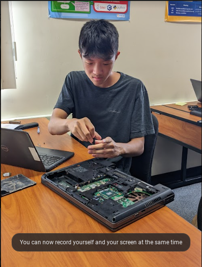

Engineering Notebook
this is my fried chicken recipe

8/19/22 today i learned how to make a website 9/2/22 today I made my firs cad which was a fridge
9/16/22 this week made paper boats that held weight for 5 mnutes. which ever one didnt sink won it was pretty interesting. one of the boats where holding a lot of weight and lasted a while but had better results while having the same amount of paper.

10/7/22 this week opened a laptop and labeled all the components inside it. like the ram, battery, cpu, and gpu and it was fun for the most part.

10/20/22 this week we where working on making bottle rockets. me and my group used a chemical reaciton with salt and vinegar. The rocket lasted for a long time and got the whole fied smelling like vinegar.
And this is the BOM link to the rocket cad https://docs.google.com/spreadsheets/d/19kru8Wiu7bXsmeMV49TYIM9TQvvrjr8i0N4zeiAFfRE/edit#gid=0
11/4/22 this week we learned about breadboarding. we learned about ohms law and how amps, volts, current, resistance works. We made simulated breadboards on cad. and we had to cad 3 led lights.
11/10/22 this week we made a circuit with LED's. we made an explanation for if taking a year of math class is better or writing up too 1 million. me and my group mate made parrelel, series and voltage divider circuits. we found that it would take 57 days straight to write too 1 million. But a math class would only be 1-2 hours a day so obviously the math class is better.
11/18/22 this week i was sick and i couldn't do anything. but apparently we coded. for challenge day we filteredd water.
12/2/22 this week the class was assigned to do a project where you had to make the lightest speghetti bridge possible while holding the most weitght on it. me and my group had an orriginal idea. But it was bad and now we are more confident about our new design12/15/22 we are officialy done with the spaghetti bridge and we are going to be using it tommorow and we are also ready to present our spaghetti bridge presentation
12/16 the bridge failed horribly but at least we got an A and it was pretty much a free period. the bridge broke after 1 cup but its fine
1/19/23 this week we learned about buisness engineering and we were going to make a buisness and propose offers to partners like shark tank it was fun and i got to learn how important it is making an offer that wont hurt your money detrimentally, our buisness was a braile printer after the presentation we learned that getting a product more widespread would obviously be smarter
1/27/23 we learned about viscosity which is how thick a fluid is. we made a liquid that difies the law of viscosity a fluid that when u hit it fast, it acts as a solid but when something is dipped in it slowly it is a liquid
1/27/23 we are making a car with an arduino that will be able to travel on its own through bluetooth we just finished making the project proposal. and now we are doing our tinker cad for our 1:1 scale of our project on cad
2/10/23 this week we made our arduino car from tinker cad.
we had to make some adjustments because the design wasnt gonna work well.
for challenge day we made a yard stick with popsicle sticks carry balloon.

2/15/23 this week me and collin decided to swap to the mousetrap car. we decided to switch because we didnt know how to code and we lost interest in it. by the end of the week we finished the base of the mousetrap car.
2/27/23 this week we finished our mousetrap car and got to use it in the race thing. it was kind of annoying because 15 minutes before it wouldnt work. we only had one try to get it to work and thank god it did.3/10/23 this week we did our challenge day and we had to make boats for a gutter